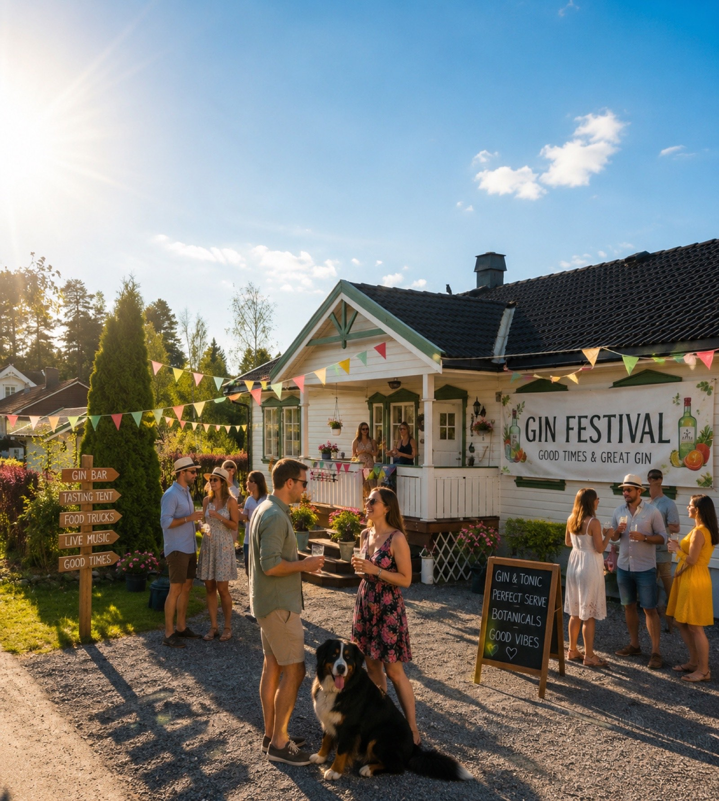

Gin-kveld i hagen på Jensrudveien 5
- 14:00 – Dørene åpner
- 14:30 – Offisiell åpning
- 15:00 – Smaksboder / felles gin-bar
- 16:00 – Mesterklasse: Botanikk 101
- 17:00 – Mat & gin-matching
- 20:00 – Dørene stenger
Lørdag 25. juli 2026 · fra kl. 14:00 · Jensrudveien 5
Én kveld med håndverksgin, botaniske smaker og godt selskap ved elva Glomma.

Sørumsand Internasjonale Gin-Festival samler destillerier fra inn- og utland til én kveld fylt med smaksprøver, mesterklasser og godt drikkehåndverk. Fra lokale småskala-produsenter til internasjonale storheter innen gin – her finner du det brede spekteret av botanisk håndverksbrennevin, presentert i koselige hageomgivelser i Jensrudveien 5.
Festivalen passer for både den nysgjerrige nybegynneren og den erfarne connoisseuren, med eget program for mat- og drikkematching, foredrag om destillering, og et eget marked med lokale spesialiteter.
Ingen SIGF uten husets egen bernersennenhund, Atlas. Han er den egentlige verten for kvelden – patruljerer hagen med logrende hale, hilser personlig på alle nyankomne gjester, og holder et svært avslappet, men prinsipielt viktig, tilsyn med gin-baren.
Atlas er stor, svart-hvit-brun og umulig å overse. Han er glad i klapp, upåklagelig med smuler, og regnes av mange gjengangere som selve grunnen til at de kommer tilbake år etter år. Kom bort og hils – det er offisielt en del av programmet.
* Fullstendig program med foredragsholdere og utstillere publiseres nærmere festivalstart.
Hvert år samler vi et bredt spekter av gin-produsenter – her er noen av kategoriene du kan glede deg til.
Småskala-destillerier fra hele Norge, med lokale botaniske råvarer.
Utvalgte destillerier fra Storbritannia, Spania og andre gin-nasjoner.
Eksperimentelle og nyskapende botaniske profiler for de nysgjerrige.
Tonic-produsenter, garnityr og matboder som utfyller smaksopplevelsen.
Er du produsent og ønsker å stille ut? Ta kontakt med oss.
I år er vi stolte over å kunngjøre at TV-profilen og bilentusiasten James May, kjent fra Top Gear og The Grand Tour, kommer innom hagefesten for en uformell prat om gin, håndverk og livets små gleder. Ta gjerne med et spørsmål – eller en ekstra flaske gin til ham.
* Med forbehold om endringer i programmet.
SIGF er en dugnadsbasert festival og koster ingenting å komme på. Eneste krav: alle gjester må ha med minst én flaske gin. Del av gleden er nettopp å oppdage nye sorter gjennom hverandres bidrag!
0 kr
* Husk gyldig legitimasjon – festivalen er for besøkende over 18 år.
Festivalen holdes utendørs i hagen på Jensrudveien 5 – med vimpelgirlandere, gin-bar og god plass til å slå seg ned. Kledd for norsk julikveld anbefales.
Jensrudveien 5Reiseinformasjon og parkering publiseres nærmere festivalen.
Har du spørsmål om festivalen, ønsker å stille ut, eller vil du melde deg på? Send oss en melding.